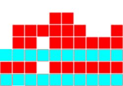
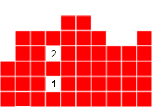
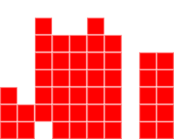

Robot
Pour le robot, nous nous sommes aidés de cet article
Principe
A chaque coup le robot va regarder le courant, le suivant et la réserve, et avec il va simuler toutes
les positions possibles avec ces pièces.
Puis pour chaque positions, il va attribuer un score à la grille, et va faire celle correspondant au
meilleur score.
Calcul du score
Pour calculer le score, nous nous référons à l'article.
On regarde 4 valeurs : la hauteur, les lignes, les trous et les bosses.
La hauteur
Pour calculer cette valeur, on somme la distance de la tuile la plus haute dans chaque
colonne au bas de la grille, comme dans l'exemple :
Ici hauteur vaut 48 = 3 + 5 + ... + 4 + 5.
On cherchera donc a minimiser cette valeur.
Les lignes
Pour calculer cette valeur, on somme le nombre de lignes complètes, comme dans l'exemple :

Ici lignes vaut 2.
On cherchera donc a maximiser cette valeur.
Les trous
Pour calculer cette valeur, on somme le nombre d'espace vide dans la grille, comme dans l'exemple :

Ici trous vaut 2.
On cherchera donc a minimiser cette valeur.
Les bosses

Ici la présence de ces puits indique que les lignes qui peuvent être dégagées facilement ne sont pas dégagées, ce qu'on veux donc éviter.
Pour calculer cette valeur, on somme les différences absolues entre les deux colonnes adjacentes comme dans l'exemple :
Ici bosses vaut 6 = |3-5|+|5-5|+...+|4-4|+|4-5|
On cherchera donc a minimiser cette valeur.
Ainsi pour calculer le score, on fais donc a*hauteur+b*lignes+c*trous+d*bosses, où a, b, c, et d, sont des constantes.
Grâce à l'article nous
avons accès au valeurs optimales trouvés grâce à un algorithme génétique que nous avons fais. Cepandant pour une meilleur fiabilité, nous avons
décidés d'utiliser les valeurs de l'article.
Les valeurs sont donc :
- a = -0.510066
- b = 0.760666
- c = -0.35663
- d = -0.184483
Implémentation
Pour implémenter ce robot, nous le fesons en python.
Le code C++ ouvre un serveur et communique à chaque frame avec le script python par l'intermédiaire des fichiers textes.
Chaque script lit ce qui est ecrit dans coups.txt/grille.txt et écrit dans l'autre fichier.
En suite on applique ce qui a été décrit précédamment.